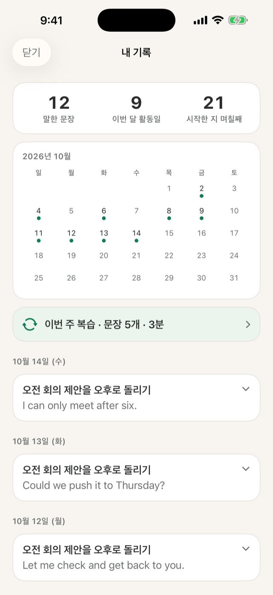

출근영어 — 큰 결심 없이, 오늘 한 문장 직장인 AI 영어회화 앱
영어는 결심이 아니라 기록이에요.

영어 앱을 몇 번 깔았다 지운 적 있다면, 이번엔 큰 결심 대신 오늘 한 문장만 해요. 출근길이나 점심 뒤 짧은 틈에 오늘의 업무 상황 하나를 60초 동안 영어로 말하거나 적으면, 자연스러운 문장 한 개와 바뀐 이유, 팁 한 개가 돌아와요. 그 문장은 「내 기록」에 조용히 쌓여, 조금씩 다르게 말하게 된 나를 보여 줘요. 연속 기록 압박도, 밀린 과제도 없어요.
결심 대신 기록
매일 한 문장씩 한 것이 「내 기록」에 남아요.
말한 문장 수
말한 문장이 숫자로 남아요
세션을 마칠 때마다 내가 영어로 말한 문장이 하나씩 더해져요.
이번 달 활동일
한 날은 달력에 점으로 찍혀요
며칠 쉬어도 깎이는 건 없고, 다시 한 날만 조용히 늘어나요.
지난 녹음 다시 듣기
예전의 내 목소리를 다시 들어요
프로에서는 지난 녹음을 들어 보며 같은 상황을 지금 얼마나 다르게 말하는지 알 수 있어요.
매일 이것만 해요
-
오늘의 상황 읽기
앱을 열면 회의·출장·거래처 통화 중 오늘 상황 하나가 준비돼 있어요.
30초
-
말하기 또는 적기
음성으로 답하거나, 말하기 어려운 자리에서는 텍스트로 적어요.
최대 60초
-
자연스러운 문장 하나 받기
문장 한 개와 바뀐 이유, 팁 한 개를 받고, 같은 뜻을 한 번 더 말해요.
1분
하루 한 번, 약 5분. 며칠 쉬어도 밀리지 않아요.
처음 시작은 이렇게
-
앱을 설치해요
계정을 만들거나 로그인할 필요가 없어요.
-
오늘 세션을 무료로 해봐요
가입 없이 하루 한 세션은 피드백까지 무료예요. 말한 문장은 최근 7일 기록으로 남아요.
-
7일은 카드 없이 프로 전부
설치하면 7일 동안 전체 기록, 주간 복습, 내 직무 상황이 그냥 열려 있어요. 카드 등록도 자동 결제도 없고, 7일이 지나면 무료로 돌아가요.
-
매일 앱을 열어요
고를 것 없이 오늘 상황이 이미 준비돼 있어요. 말하기 어려운 자리에서는 텍스트로 답해도 같은 한 세션으로 끝나요.
한 세션은 이렇게 흘러가요
위의 하루 한 세션을 화면과 함께 자세히 본 모습이에요.

1상황
준비된 상황을 읽어요
오늘의 업무 상황 하나와 그에 대한 영어 질문이 이미 준비돼 있어요. 무엇을 공부할지 고르지 않아도 돼요.

2말하기 또는 텍스트
말하거나 적어서 답해요
음성으로 최대 60초까지 답해요. 말을 중간에 끊지 않고, 멈추는 시점은 사용자가 정해요. 지하철이나 사무실에서는 왼쪽의 '텍스트로' 버튼을 눌러 적어도 돼요.

3피드백
문장 하나와 팁 하나를 봐요
의도가 전달됐는지 먼저 알려주고, 자연스러운 문장 한 개와 왜 바뀌었는지 한 줄, 가장 영향이 큰 팁 한 개만 보여줘요. 달라진 부분만 표시해서 전체를 다시 읽지 않아도 돼요.
4다시 말하기
같은 뜻을 한 번 더 말해요
받은 문장을 참고해 같은 뜻을 한 번 더 말해봐요. 텍스트로 답했다면 한 번 더 적으면 돼요. 건너뛰고 바로 완료해도 괜찮아요.

5완료
저장한 표현을 확인하고 끝내요
오늘 저장한 표현 하나와 다음 복습일을 확인하고 끝나요. 연속 일수나 요일 빈칸 같은 압박 장치는 없어요.
스픽과 다른 점
좋은 앱들이 이미 많아요. 출근영어가 다르게 잡은 것은 세 가지예요.
하나
밀린 과제가 없어요
며칠 쉬어도 복습 큐가 쌓이지 않아요. 돌아오면 밀린 것부터가 아니라 오늘 세션부터 다시 시작해요.
둘
한 문장, 한 팁
틀린 곳을 한꺼번에 지적하지 않아요. 의도를 살린 자연스러운 문장 한 개와 가장 영향이 큰 팁 한 개만 드려요.
셋
월 구독, 즉시 해지
연 단위 강제 결제나 월 할부가 없어요. 가격과 해지 방법을 앱 화면에 그대로 적어 둬요.
요금
App Store 가격
월간
4,900원
구매 당일 결제 · 언제든 해지
연간
29,000원
월 2,417원꼴 · 2개월 무료인 셈
무료와 프로
무료
- 하루 한 세션, 피드백까지 (자연스러운 문장 · 바뀐 이유 · 팁)
- 최근 7일 내 기록
- 성장 숫자: 말한 문장 수 · 이번 달 활동일
프로
- 내 기록 전체와 지난 녹음 다시 듣기
- 주간 복습: 이번 주 문장 5개 다시 말하기
- 직무 트랙: 개발·IT, 영업·마케팅, 기획·PM, 인사·총무, 재무·회계, 무역·구매 상황 60개
- 패턴 설명: 이 표현을 쓰는 다른 상황과 예문
- 하루 3세션, 다른 상황 보기
업무 상황은 모두 110개예요(공통 50개 + 직무 트랙 60개). 쉬어도 줄지 않는 누적 숫자만 보여 주고, 연속 기록 같은 압박은 없어요.
첫 달 30% 할인과 이어가면 12개월 15% 할인은 앱 안에서 안내해요.
미리보기 안내. 설치 후 7일은 카드 등록 없이 프로 기능 전부를 쓸 수 있고, 아무것도 결제되지 않아요. 7일이 지나면 무료 플랜(하루 1세션)으로 돌아가요.
자동 갱신 안내. 프로는 구매 당일 결제되고, 별도 해지가 없는 한 매 기간 같은 가격으로 자동 갱신돼요.
해지 방법. iPhone 설정 > Apple 계정 > 구독에서 언제든 해지할 수 있어요. 갱신 24시간 전까지 해지하면 다음 결제가 되지 않고, 남은 기간은 그대로 쓸 수 있어요.
가격은 App Store 앱 페이지와 앱 안 결제 화면에 표시돼요. 결제 전에 그 화면에서 금액을 확인하세요.
자주 묻는 질문
며칠 못 하면 어떻게 되나요?
아무것도 쌓이지 않아요. 밀린 과제나 복습 큐가 없고, 돌아온 날의 오늘 세션부터 다시 시작해요. 연속 일수도 세지 않아요.
영어를 잘 못해도 되나요?
괜찮아요. 의도가 전달됐는지 먼저 확인하고, 고칠 곳은 한 가지만 알려줘요. 틀린 곳을 한꺼번에 지적하지 않아요.
말하기 어려운 자리에서는요?
텍스트 모드로 같은 세션을 끝낼 수 있어요. 지하철이나 사무실에서는 답을 적으면 되고, 받는 피드백은 음성으로 답할 때와 같아요.
지하철에서도 되나요?
네. 소리를 낼 수 없는 곳에서는 텍스트 모드로 답을 적어서 같은 세션을 끝까지 할 수 있어요. 받는 피드백도 음성으로 답할 때와 같아요.
하루 5분으로 효과가 있나요?
하루에 한 상황, 한 문장만 다루기 때문에 며칠 쉬어도 밀리지 않고 이어갈 수 있어요. 전날 세션을 했다면 다음 날 첫 화면에 어제 말한 문장이 카드로 다시 나와서, 그 문장을 한 번 더 떠올려 볼 수 있어요.
하루에 몇 번 할 수 있나요?
무료로는 하루 한 세션을 끝까지 할 수 있어요. 설치 후 7일 미리보기와 프로 구독 중에는 하루 3세션까지 하고, 다른 상황으로 바꿔 볼 수도 있어요.
녹음은 어디에 저장되나요?
녹음은 iPhone 안에서 Apple 음성 인식으로 텍스트가 되고, 음성 파일은 기기를 떠나지 않아요. 서버로는 텍스트만 가고, 피드백 문장은 Anthropic의 Claude가 써요.
개인정보
- 음성을 저장하지 않아요. 녹음은 iPhone 안에서 텍스트로 바뀌고, 음성 파일은 서버로 보내지 않아요.
- 계정도 로그인도 없어요. 기록은 기기에서 만든 익명 기기 ID 하나로만 구분해요.
- 언제든 지울 수 있어요. 앱의 '내 데이터 삭제'를 누르면 서버 기록이 즉시 전부 삭제돼요.
English
출근영어 (Workday English) is a once-a-day English speaking routine for Korean office workers: one work situation for today, one sentence of feedback, about five minutes.
- Answer today's question by voice (up to 60 seconds) or by text, then hear it back as one natural sentence with one line on what changed and a single tip, say it once more, and the session is done.
- No big resolution. One sentence a day, and a record that grows.
- Nothing piles up. Take a few days off and you resume with today's session, not a backlog.
- Free: one full session a day with feedback, the last 7 days of your record, and growth numbers (sentences spoken, active days this month). Pro adds your full record and past recordings, a weekly review of this week's 5 sentences, 60 job-track situations (IT, sales, PM, HR, finance, trade), phrase patterns explained, and 3 sessions a day.
- Pricing: ₩4,900 per month or ₩29,000 per year, charged on purchase. The first 7 days after install open every Pro feature with no card and no purchase. The subscription renews automatically unless cancelled in Settings > Apple Account > Subscriptions at least 24 hours before the renewal date.
- Speech is transcribed on the iPhone by Apple's speech recognition, and the audio never leaves the device. Only the text is sent to the server, where the feedback is written by Anthropic's Claude. There is no account or sign-in — records are tied to an anonymous device ID and can be deleted from the app.
- The interface is available in 36 languages, including Korean and English. The practice question and the model sentence are always in English.
See Support and the Privacy Policy for details. Download 출근영어 on the App Store.